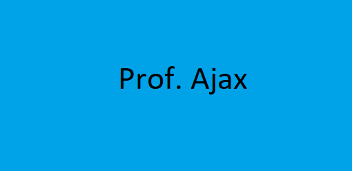

HOME
|
Músicas
|
Aulas Grátis
|
Planos
|
Contato
|
Como dizer "Olá, mundo" na linguagem de Python:
Como dizer "Olá, mundo" na linguagem de Java:
Como dizer "Olá, mundo" na linguagem de C#:
Como dizer "olá,mundo" na linguagem de R: